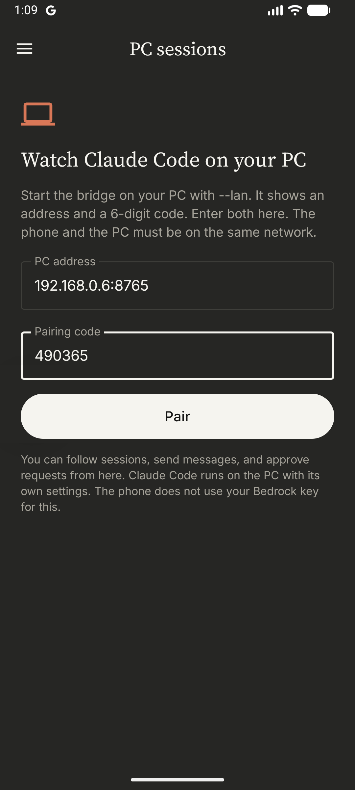
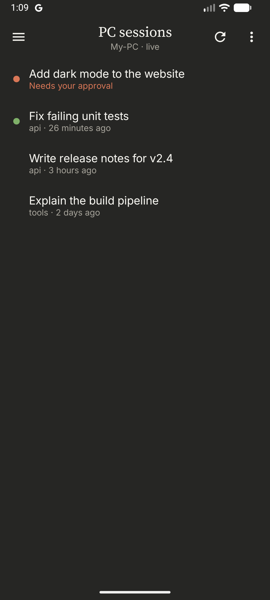
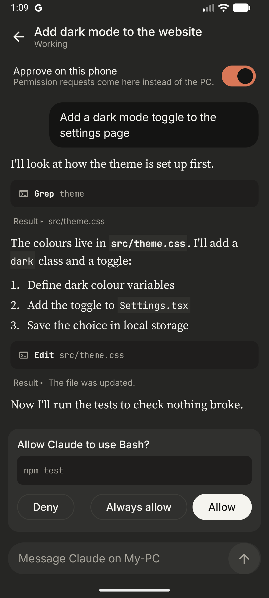

Setup guide: follow, message, and approve Claude Code sessions on your computer from an Android phone
The bridge is a small program that runs on the computer where you use Claude Code. The phone app connects to it over your local network. With it you can:
The bridge uses only documented Claude Code interfaces: hooks, claude agents, and the
Claude Agent SDK. Watching adds no tokens. Only a message that you send from the phone uses tokens,
the same as a message typed on the computer. It works with any Claude Code sign-in, including Amazon Bedrock.
| Item | Details |
|---|---|
| Computer | Windows, macOS, or Linux, with Claude Code installed and signed in.
The claude command must work in a terminal. |
| Python | Python 3.10 or later. |
| Shell and curl | The hooks use curl and a POSIX shell. macOS and Linux have both.
On Windows, Claude Code uses Git Bash, which includes them. |
| Claude Agent SDK | The Python package claude-agent-sdk (see step 3). |
| Phone | Android 8.0 or later, with the Bedrock Chat app (APK file). |
| Network | The phone and the computer must be on the same Wi-Fi or local network. |
Put these three files in one folder, for example bridge:
bridge.py, viewer.html, and install_hooks.py.
Open a terminal in the folder that contains bridge.
python -m pip install claude-agent-sdk
If you do not want to install packages system-wide, install into a folder and tell the bridge where it is:
python -m pip install --target C:\Tools\claude-agent-sdk claude-agent-sdk set CLAUDE_AGENT_SDK_DIR=C:\Tools\claude-agent-sdk (Windows cmd) export CLAUDE_AGENT_SDK_DIR=$HOME/tools/claude-agent-sdk (macOS, Linux, Git Bash)
The hooks tell the bridge what each session does. First run the script without options to see
the change. It shows only the hooks section of your settings:
python -I bridge/install_hooks.py
Then apply it. The script makes a backup of ~/.claude/settings.json first, and it keeps your other hooks:
python -I bridge/install_hooks.py --apply
install_hooks.py --remove.Start it each time you want to use the phone:
python -I bridge/bridge.py --lan
It prints the phone address and a pairing code:
Bridge running at http://localhost:8765 Phone address: http://192.168.1.20:8765 Pairing code: 703460 (valid 10 minutes)
--lan lets the phone connect. Without it, only the computer itself can connect.http://localhost:8765 in a browser on the computer and look at Pair a phone.192.168.1.20:8765) and the pairing code.Restarting the bridge or the computer does not remove the pairing. The bridge keeps the phone's
token in the file bridge/.bridge-token and reads it again at each start.
You must pair again only in these cases:
| Case | Why |
|---|---|
You deleted bridge/.bridge-token | The bridge makes a new token, so the old one stops working. |
| You moved the bridge to a new folder or computer without that file | Same as above. |
| You tapped Unpair this PC, cleared the app's data, or reinstalled the app | The phone no longer has the token. |
| The computer's network address changed | The app keeps the old address. Unpair, then pair with the new address. To prevent this, reserve a fixed address for the computer in your router settings. |
The bridge also keeps the messages that you sent from the phone (also the ones that still wait to send), and the messages that you typed on the computer while
Claude worked, in bridge/.session-prompts.json. Claude Code's session list does not show these, so the phone needs this file
to show them. If you move the bridge to a new folder or computer, copy this file with .bridge-token.
Messages and approvals also continue after a bridge restart, and each Approve on this phone
switch stays as you set it. A phone message that waits for an open session also stays in the queue
(it is kept in .session-prompts.json), and it goes in when Claude finishes its turn.



The list shows the sessions on the computer. A teal dot means the session is working or needs you. A green dot means it is open and waiting. Tap a session to follow it live. Tap a tool row or Result to see more.
Type in the box at the bottom of a session and tap the arrow.
claude -p --resume.While Claude works and the message box is empty, the send button changes to a stop button (a square). Tap it to stop the turn. Messages that wait to send are removed too.
claude -p --resume): it ends at once.python -I bridge/install_hooks.py --apply again.Turn on Approve on this phone in a session. Then tool requests come to the phone as a card with Deny, Always allow, and Allow. When the switch is off, requests show on the computer as usual.
claude -p, requests always come to the phone,
and a request with no answer is denied.Notifications are on by default. Right after you pair, Android asks for two permissions: notifications, and background use ("Let app always run in the background?"). Allow both. Android does not let an app ask at install time. Then the phone notifies you even when the app is closed:
To keep the phone quiet while you work at the computer, it notifies only for sessions that you control from the phone: sessions with Approve on this phone on, and turns that a phone message started. It does not notify about the session that is open on the screen.
The bridge does not call Claude by itself. Tokens are used only when Claude does a turn. This table shows what each phone action costs, compared with the same action on the computer.
| Phone action | Tokens |
|---|---|
| Open the app, see the session list, follow a session live | None. The bridge reads the session files on the computer. The hooks send events to the bridge only, and they add nothing to Claude's context. |
| Allow, Deny, or Always allow a request | None extra. It is the same as answering the dialog on the computer. |
| Notifications | None. They come from the same events as the live view. |
| Wait for a phone message (an idle open session) | None. A small background hook waits on the computer. It does not call Claude. |
| Send a message to an open session | About the same as typing it on the computer. The bridge adds a short note (about 25 tokens) that asks Claude to start its reply with your message as a quote. The quote is how the message shows on the computer. The reply is longer by that one line. |
| Send a message to a closed session | Can be expensive. The bridge continues the session
with claude -p --resume. Claude reads the whole conversation again as input. For a long session,
that can be many thousands of tokens. The app warns you before it sends. |
| Problem | What to do |
|---|---|
| "Could not reach …" | Make sure the bridge runs with --lan, the phone is on the same network,
and the address is correct. On Windows, check that the firewall allows Python on private networks. |
| "Wrong or expired code" | Get the current code from http://localhost:8765 on the computer. |
| "This phone is no longer paired" | Pair again with a new code. |
| No sessions, or no live updates | Check that the hooks are applied (step 3.3) and that
claude agents --json works in a terminal. |
ModuleNotFoundError: claude_agent_sdk | Install the SDK (step 3.2), or set CLAUDE_AGENT_SDK_DIR. |
| Port 8765 is in use | Stop the other program. The hooks expect port 8765. |
bridge/.bridge-token and bridge/.paired-devices.json, and start the bridge again.python -I bridge/install_hooks.py --remove
Then delete the bridge folder and uninstall the app.